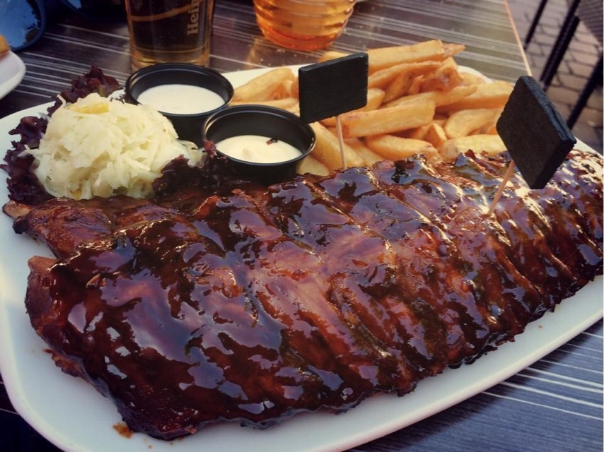

Ribbetjes met coleslaw

1 uur
4 personen
Ingrediënten
De gemarineerde ribbetjes
- 2 eetlepels ahornsiroop
- 2 eetlepels mosterd
- 1 eetlepel ketjap manis (Oosterse saus)
- 1 eetlepel ketchup
- 1 mespuntje cayennepeper
- Provençaalse kruiden
- 600 g varkensribben
de coleslaw
- 1/4 witte kool
- 3 wortels
- 1 kleine rode ui
- 1 appel
- 1/2 bussel peterselie
- 2 eetlepels mayonaise (grote)
- 1 limoen
- peper
- zout
Bereiding
De gemarineerde ribbetjes
- Verwarm de over voor op 150°C
- Maak eerst een marinade met de ahornsiroop, de mosterd, de ketjap manis, de ketchup, een mespuntje cayennepeper (voorzichtig!), en de Provençaalse kruiden.
- Schik de ribbetjes op de ovenschaal. (Leg ze op een vel bakpapier of een siliconenmatje.) Bestrijk het vlees royaal met de marinade.
- Bak de ribbetjes 40-45 minuten in de voorverwarmde oven op 150 °C. Bestrijk het vlees tijdens het bakken af en toe met extra marinade.
De colesaw
- Schil de wortels, was de witte kool en rasp alles fijn.
- Snij de rode ui zeer fijn en hak de blaadjes van de peterselie.
- Schil de appel en snij het vruchtvlees in kleine kubusjes.
- Schep de mayonaise in een potje en roer het sap van de limoen erdoor.
- Neem een slakom en meng alle ingrediënten tot een smeuïge sla.
- Kruid naar smaak met peper en zout.
- Versnij de ribbetjes en serveer met een flinke schep coleslaw.
- 1/4 witte kool
- 3 wortels
- 1 kleine rode ui
- 1 appel
- 1/2 bussel peterselie
- 2 eetlepels mayonaise (grote)
- 1 limoen
- peper
- zout
Bereiding
De gemarineerde ribbetjes
- Verwarm de over voor op 150°C
- Maak eerst een marinade met de ahornsiroop, de mosterd, de ketjap manis, de ketchup, een mespuntje cayennepeper (voorzichtig!), en de Provençaalse kruiden.
- Schik de ribbetjes op de ovenschaal. (Leg ze op een vel bakpapier of een siliconenmatje.) Bestrijk het vlees royaal met de marinade.
- Bak de ribbetjes 40-45 minuten in de voorverwarmde oven op 150 °C. Bestrijk het vlees tijdens het bakken af en toe met extra marinade.
De colesaw
- Schil de wortels, was de witte kool en rasp alles fijn.
- Snij de rode ui zeer fijn en hak de blaadjes van de peterselie.
- Schil de appel en snij het vruchtvlees in kleine kubusjes.
- Schep de mayonaise in een potje en roer het sap van de limoen erdoor.
- Neem een slakom en meng alle ingrediënten tot een smeuïge sla.
- Kruid naar smaak met peper en zout.
- Versnij de ribbetjes en serveer met een flinke schep coleslaw.